自主企画ゼミの準備
メンバー集め、開講日決めなど。
麗澤大学 2026年度春 / 自主企画ゼミ活動報告
SUPERVISOR Yoh Kawano
Fuga Nakamura / Keitaro Takahashi / Hikaru Kobayashi / Soichiro Kanbe
Moriumi Maeda / Shion Oba / Aoi Omori / Yurino Nakamura / Kenta Nakatani
昨年度、滋賀県高島市で集めた「場所と思い出」をきっかけに、学生が自分たちで次の展示を企画した。舞台は麗澤大学のHome Coming Day。年代の異なるキャンパス地図を並べ、卒業生が在学当時の出来事を付箋へ記録できる場をつくった。
第2期となる今回は、紙の地図だけでなく、付箋の撮影、手書きOCR、人による確認、データベースへの保存、3D空間への表示までを一つの流れとして開発した。本ページでは、4月の企画開始から6月20日の本番まで、学生が何を決め、作り、直したかを記録する。
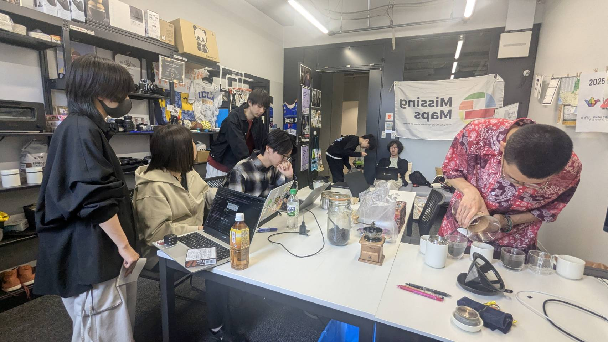
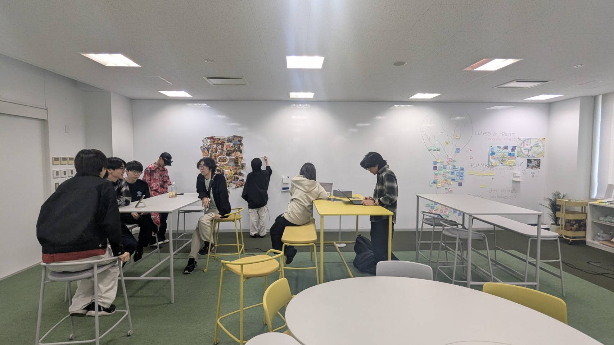
.png)


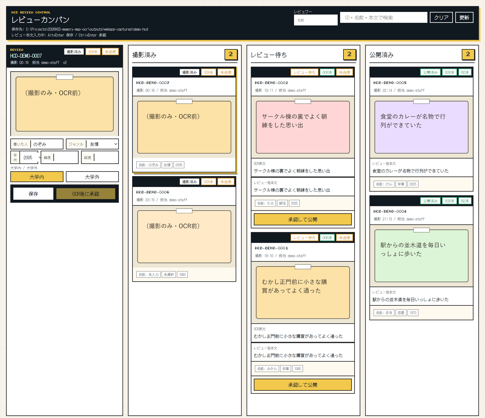

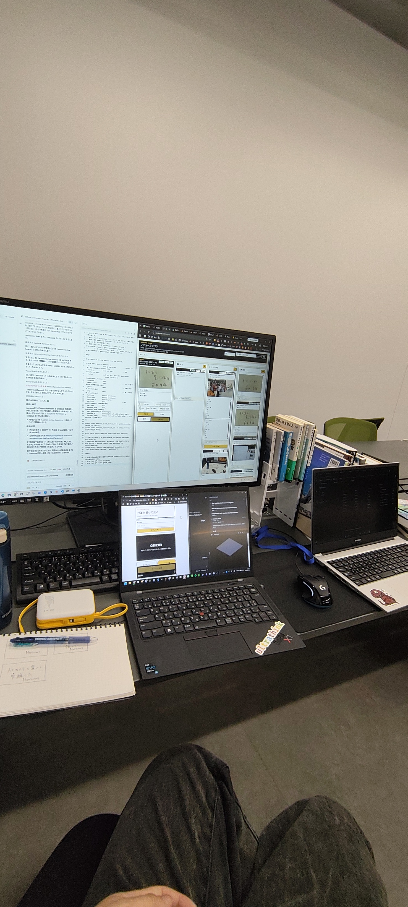
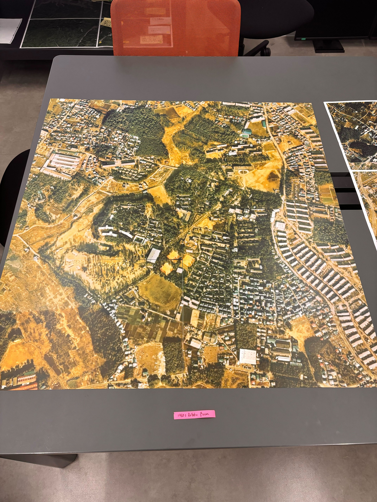
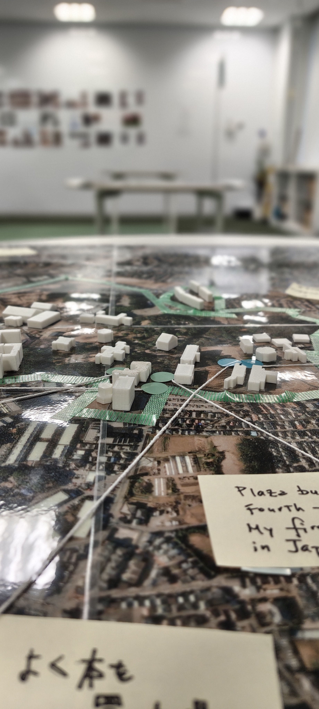
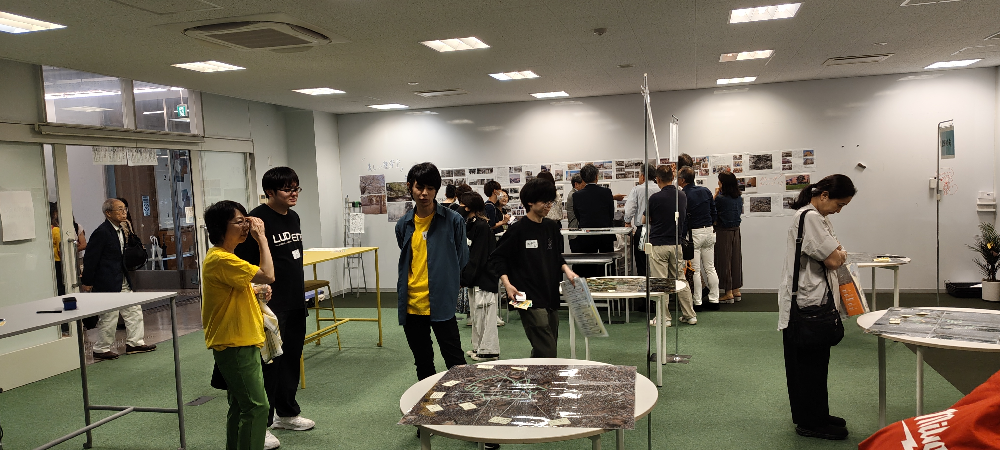
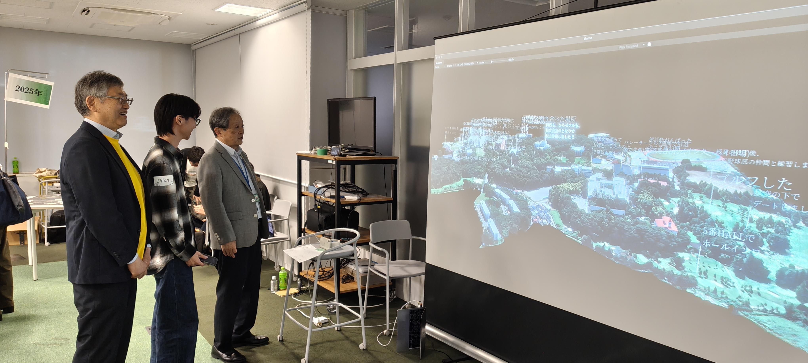
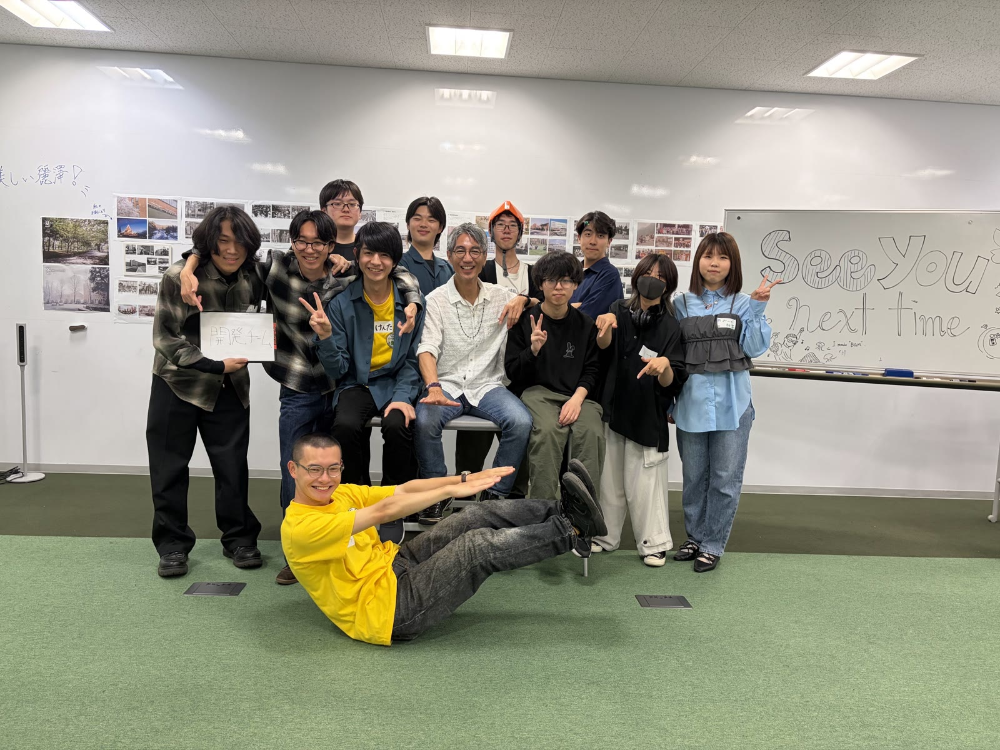


2026年春、麗澤大学の自主企画ゼミとして集まった学生が、卒業生と在校生の記憶を同じ地図の上へ集める展示を企画し、4月の構想から6月20日の本番まで、決めたこと、作ったもの、直したところを時系列で記録する。
アナログ班は年代の異なるキャンパス地図を印刷してラミネート加工し、六つのカテゴリに色を割り当てた付箋と紐で、思い出とその場所を紙の上に結ぶ。技術班はスマートフォンでの付箋撮影、手書きOCR、人の目による確認、データベースへの保存、Unityでのリアルタイム表示までを一本の経路としてつなぐ。
細部の完成度より先に端から端まで通す判断を置く。本番三日前には投稿地点と3D上の表示位置がずれ、原因がUnityの単位設定にあると突き止めて座標を補正し、6月20日のHome Coming Dayで紙と3Dが同じ会場で動く展示を成立させる。
当日の分担とシステムの本番稼働まで、準備の過程で決めたことと直したことを記録する。
01 / ACTIVITY NOTES
メンバー集め、開講日決めなど。
ゼミについての認識をすり合わせ、Home Coming Dayに参加すること、その後も続けられる思い出マップの企画を話し合った。
＋ 追加メンバーが参加！
アルバム、フィルム、日記、カレンダーなど、思い出を表示するUI（ユーザーインターフェイス）について話し合った。
地図と年代写真の展示と、投稿を3D空間へ表示する仕組みを並行して進めることにした。
HCD当日のプロジェクションマッピングの最初のテスト。
見る場所、付箋を書く場所、デジタル表示を見る場所の関係を検討した。
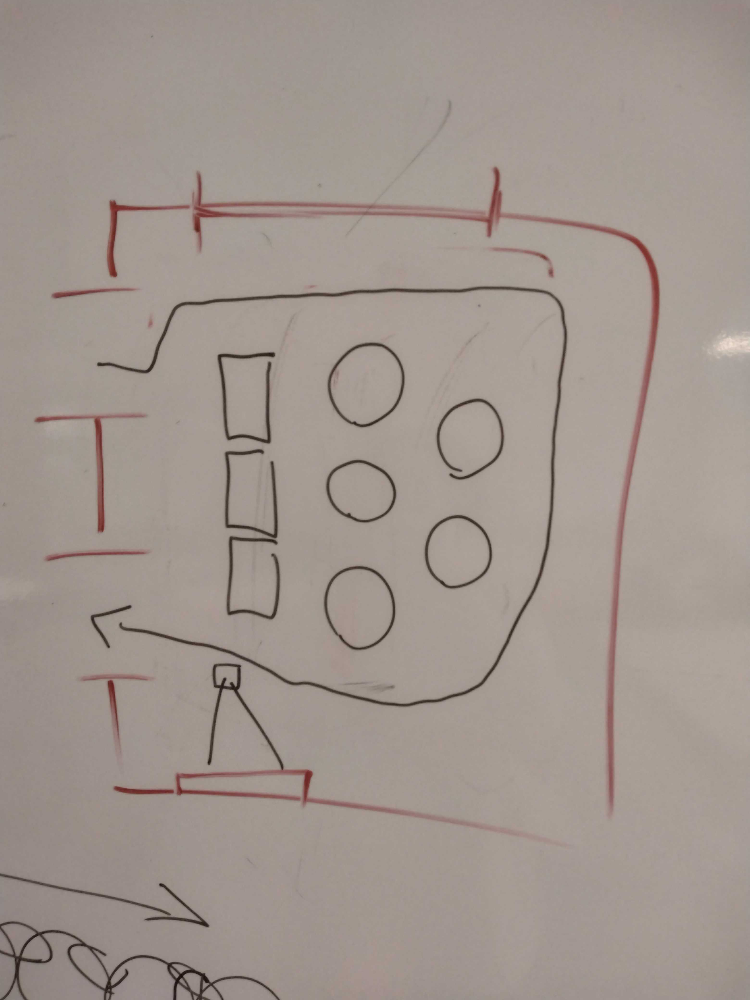
あなたの青春が同じ地図上で出会う。
離れていても思い出はキャンパスに。
デジタル班の血の涙によって、Unityでの建物データの表示、本のオープニングアニメーションの土台が完成！
大学の50周年記念冊子を入手し、その写真も活用することに。
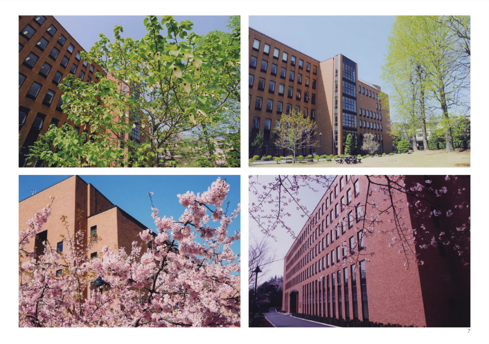
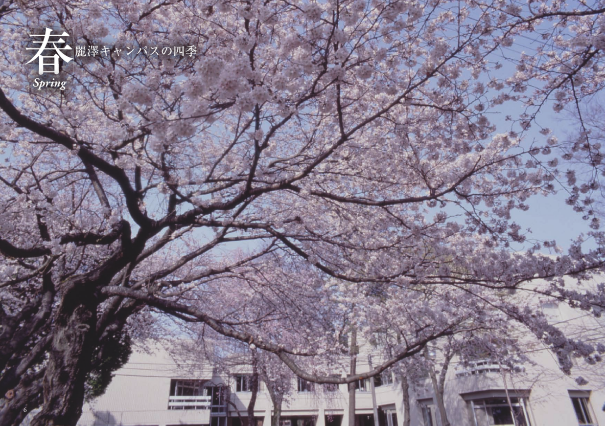
航空写真を印刷してそれを貼り合わせ、1枚の大きなマップを作成。

台風によって活動が休講に。再来週に迫ったHCDに向けての準備は継続！
1960、1970、1980、2005、2025年のアナログマップが完成。
Blenderで作成した3Dデータを、実際に思い出を表示するUnityで開くことに成功！ ベイクを用いてテクスチャを単一化するなどの工夫も。
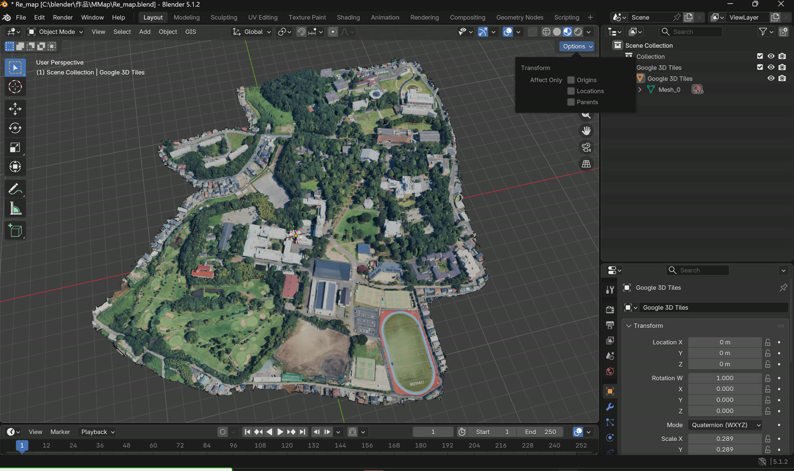
過去の展示を共有し、当日必要なものと担当を洗い出した。投稿内容（本文の例やカテゴリなど）や、データ形式の確認も。
HCD当日の会場であるR Loungeを確認。アナログマップだけでなくプロジェクター、スクリーンも準備しセッティングを行った。
思い出を3D空間にアップロードするためのWebアプリ、それに付随するOCR（文字認識）を開発した。実際にメンバーに試してもらいUI、UXを磨き上げた。
3Dマップのワイヤーフレーム効果や、アニメーションをブラッシュアップ！
Webアプリの座標指定ツールのために、アナログマップの端の緯度経度を座標系として調べる必要が出た。手分けをして緯度経度を調べ、無事同期完了。
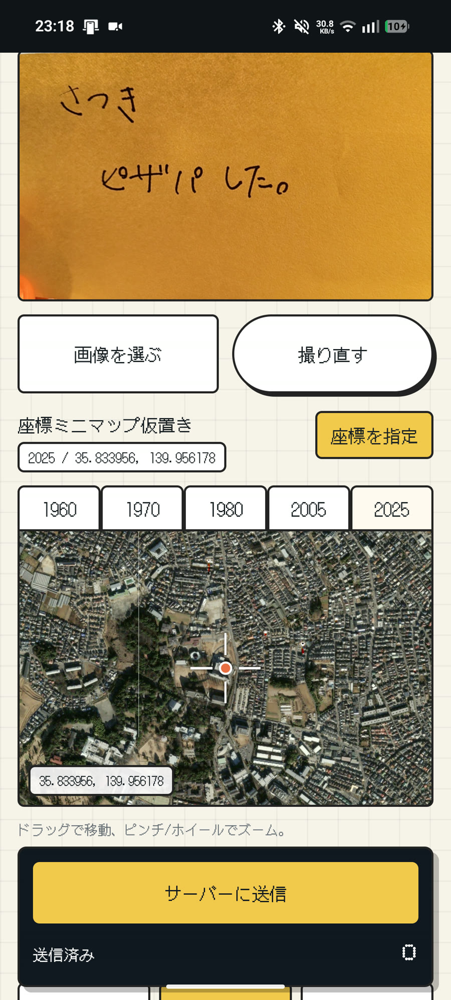
思い出カードのためのシールや付箋、糸などを買い出した。
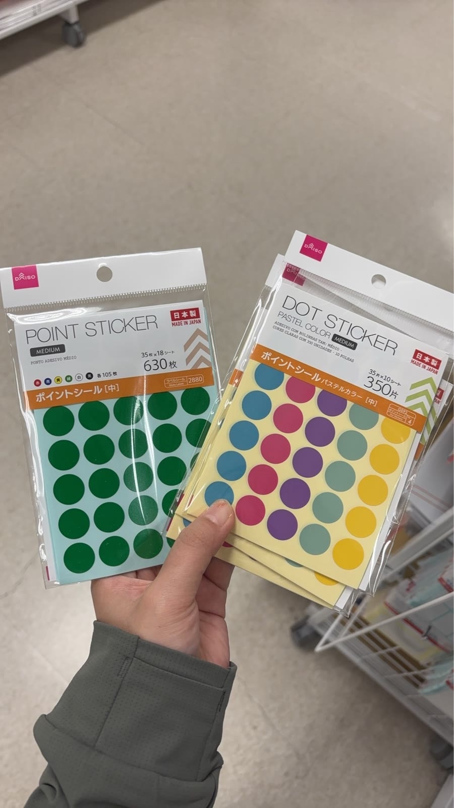
アナログマップの校舎を立体的に見せるため、校舎だけを3Dプリンターで印刷し重ねて置くことに。外部メンバーの協力もあって建物データから印刷が完了！
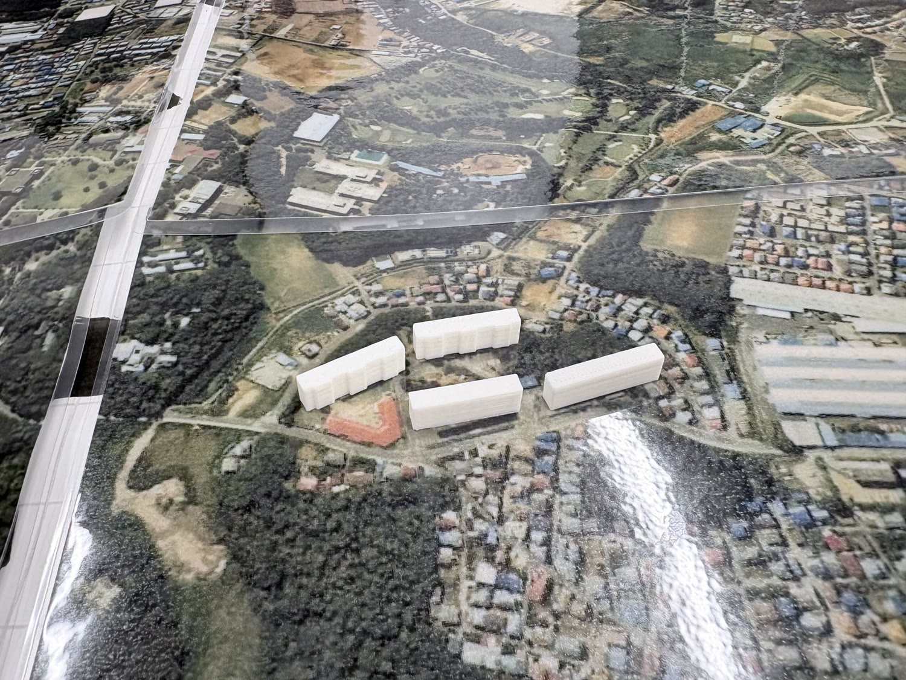
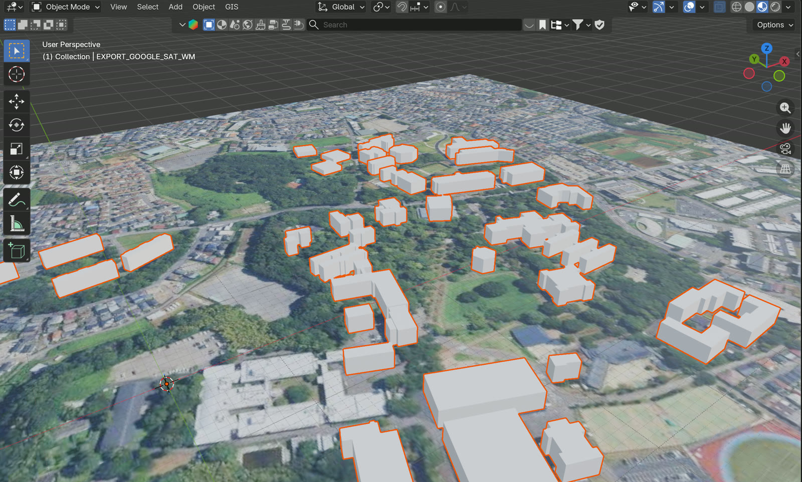
OCRの精度を補うため、Webアプリにレビュー機能を追加。人間がレビューしてからデータがアップロードされるように。データベース（Supabase）も環境が整い、連携可能になった。
R Loungeで再確認。
投稿をWebアプリで読み込み、Supabaseへアップロードし、それをUnityで読み込むフローが完成！ Unity側のキャリブレーションに少し詰まったが解決。
どんどん改良されていく！！
ビートメイクができるメンバーがブース内BGMとオープニングアニメーションのSEを制作。
HCDの来訪者用の、思い出作成のガイドを作成。ジャンル分けについても色分けしつつ提示。
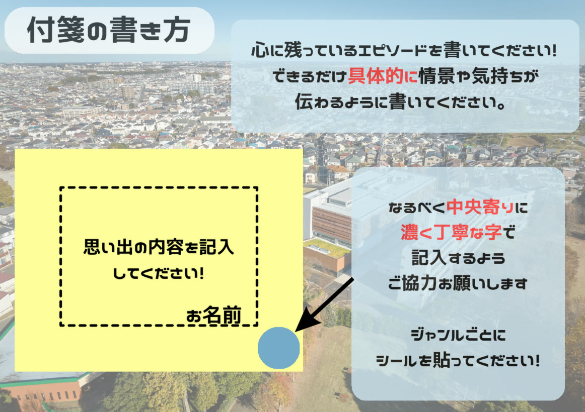
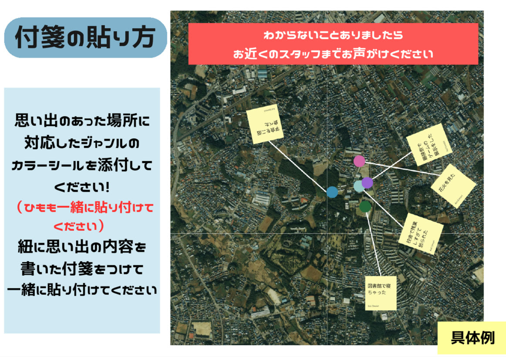
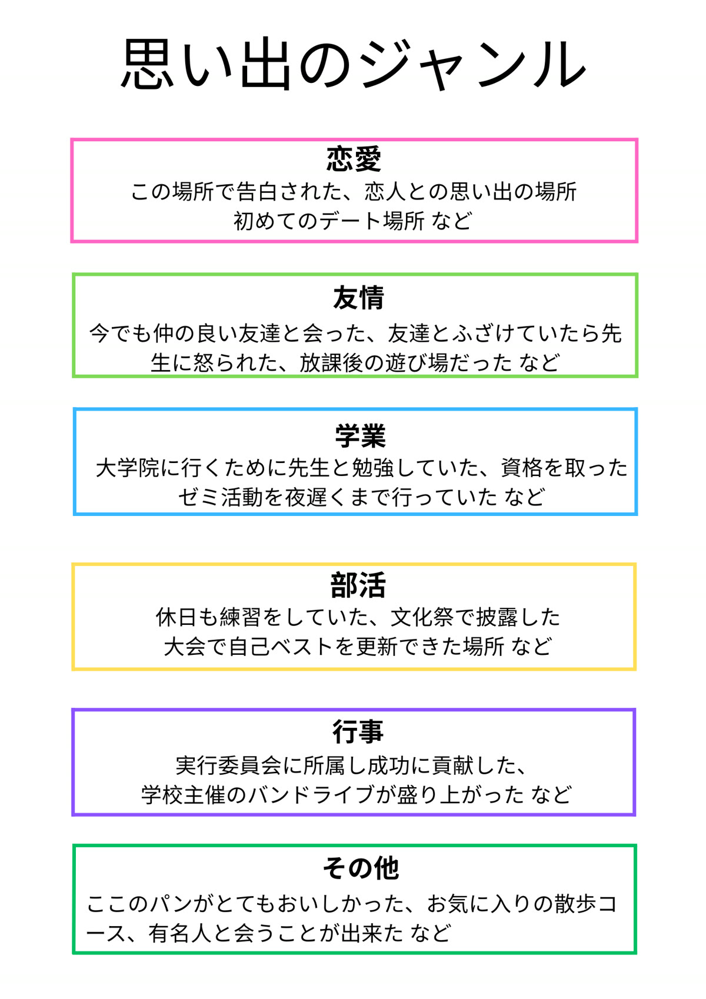
02 / OUTPUTS
制作中の成果物を開く
EXPERIENCE / ANALOG
卒業生が在学した年代を選べるよう、複数年代のキャンパス地図を制作した。付箋のカテゴリと場所を対応させ、紙そのものを思い出の収集装置として設計した。

NEXT.JS / YOMITOKU
Next.jsで撮影用Webアプリを制作し、付箋画像、カテゴリ、地図上の位置をSupabaseへ送信した。ローカルのOCR処理はCloudflare Tunnel経由で会場のスマートフォンへ配信した。

SUPABASE / DATABASE
思い出の本文、カテゴリ、緯度経度、画像の参照先をSupabaseで管理した。新しい投稿を再読み込みなしでUnityへ届けるリアルタイム通信にも利用した。
UNITY / BLENDER
Unityで投稿をリアルタイムに描画し、Shader Graphで思い出が浮かび上がる表現を作った。Blenderではキャンパスモデル、ワイヤーフレーム地図、開く本や紙のアニメーションを制作した。
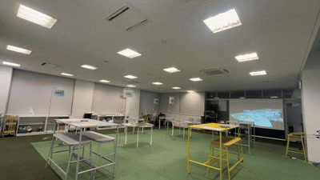
THREE.JS / WEB VIEWER
Unityで検証した位置や構成を参照し、Three.jsでブラウザ版を試作した。PCとスマートフォンから地図と投稿位置を確認できる。

03 / CREDITS & REPOSITORIES
Yoh Kawano
Fuga Nakamura
Keitaro Takahashi
Hikaru Kobayashi
Soichiro Kanbe
Moriumi Maeda
Shion Oba
Aoi Omori
Yurino Nakamura
Kenta Nakatani
OCR Web application ↗
Unity mapping ↗
Three.js Web viewer ↗
kiseki-lab ↗